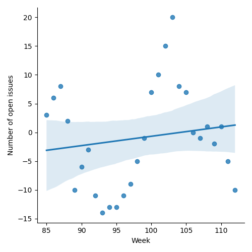
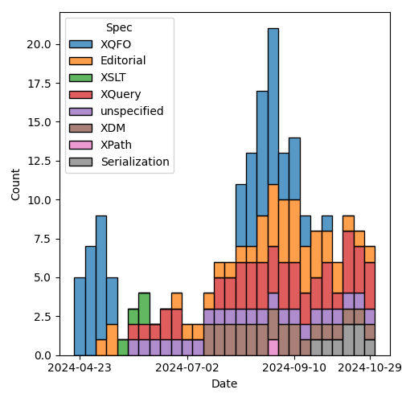
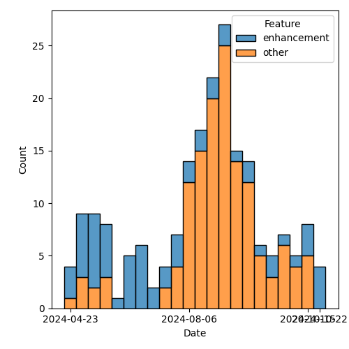

QT4 CG Meeting 097 Minutes 2024-11-05
Meeting index / QT4CG.org / Dashboard / GH Issues / GH Pull Requests
Table of Contents
Draft Minutes
Summary of new and continuing actions [1/7]
XXX
1. Administrivia
1.1. Roll call [12/12]
[X]David J Birnbaum (DB)[X]Reece Dunn (RD)[X]Sasha Firsov (SF)[X]Christian Grün (CG)[X]Joel Kalvesmaki (JK)[X]Michael Kay (MK)[X]Juri Leino (JLO)[X]John Lumley (JWL)[X]Dimitre Novatchev (DN)[X]Wendell Piez (WP)[X]Ed Porter (EP)[X]Norm Tovey-Walsh (NW). Scribe. Chair.
1.2. Accept the agenda
Proposal: Accept the agenda.
Accepted.
1.2.1. Status so far…
These charts have been adjusted so they reflect the preceding six months of work.

Figure 1: “Burn down” chart on open issues

Figure 2: Open issues by specification

Figure 3: Open issues by type
1.3. Approve minutes of the previous meeting
Proposal: Accept the minutes of the previous meeting.
Accepted.
1.4. Next meeting
This next meeting is planned for 12 November. Any regrets?
DN gives regrets.
1.5. Review of open action items [2/7]
(Items marked [X] are believed to have been closed via email before this agenda was posted.)
[ ]QT4CG-080-07: NW to update the build instructions in the README[ ]QT4CG-082-02: DN to work with MK to come to agreement on the fn:ranks proposal[ ]QT4CG-088-01: NW to consider how best to add a dedication to MSM.[ ]QT4CG-088-04: [Someone] needs to update the processing model diagram needs vis-a-vis the static typing feature[ ]QT4CG-089-01: CG to draft a PR that attempts to resolve the operators described in #755 to a smaller number of orthogonal choices.[X]QT4CG-096-01: MK to add a note to the Terminology section about ++ and **[X]QT4CG-096-02: NW to create an issue about the indentation parameters.
1.6. Review of open pull requests and issues
1.6.1. Blocked
The following PRs are open but have merge conflicts or comments which suggest they aren’t ready for action.
- PR #1505: 1503 Add err:map, err:stack-trace, err:additional to XSLT
- PR #1505: 1503 Add err:map, err:stack-trace, err:additional to XSLT
- PR #1454: 1449 Relax rules on multiple xsl:includes
- PR #1296: 982 Rewrite of scan-left and scan-right
- PR #1283: 77b Update expressions
- PR #1062: 150bis revised proposal for fn:ranks
- PR #529: 528 fn:elements-to-maps
1.6.2. Merge without discussion
The following PRs are editorial, small, or otherwise appeared to be uncontroversial when the agenda was prepared. The chairs propose that these can be merged without discussion. If you think discussion is necessary, please say so.
- PR #1541: QT4CG-096-1 Add notes explaining EBNF notation
Proposal: accept this PR without discussion.
Accepted.
1.6.3. Substantive PRs
The following substantive PRs were open when this agenda was prepared.
- PR #1547: 1542 Add "formal" definitions of non-primitive axes
- PR #1546: 1538 Add XSLT support for json-lines
- PR #1545: 1539 New civil-timezone function
- PR #1544: Allow (some) self-references in global variables
- PR #1543: Drop fn:element-number
- PR #1541: QT4CG-096-1 Add notes explaining EBNF notation
- PR #1535: 1478 Drop variadic functions
- PR #1523: 148 New functions to get type information
- PR #1470: 689 fn:stack-trace: replace with $err:stack-trace
- PR #1454: 1449 Relax rules on multiple xsl:includes
2. Technical agenda
2.1. PR #1523: 148 New functions to get type information
See PR #1523.
- MK: We ran out of time last week, but I don’t think anything has changed.
(We’ll do a quick skim to catch up.)
- MK: They’re all new functions:
fn:node-kind. It’s defined in terms of node tests.- Should be defined in terms of the Data Model accessor function.
- Section 19, Functions on Types, is a new section
MK summarizes schema-type-record and the introduction to Section 19.
- JL: Given that these are functions, does it make sense to call out why?
ACTION QT4CG-097-01: MK to add a note explaining why base-type and friends are functions in the schema-type-record
- MK: I’m assuming that readers are familiar with the XSD schema component model.
- RD: For the XSD properties, would it make sense to put a link to them in the XSD spec?
ACTION QT4CG-097-02: MK to make the XSD schema component references into links to XSD
- MK: The
validatefunction returns the annotated type,validjust indicates if it’s valid or not.
Three new function use the schema-type-record
- MK:
fn:schema-type, finds an in-scope schema type if there is one;fn:atomic-type-annotation, returns annotations for the atomic type. Don’t use it as a substitute forinstance of. ~fn:node-type-annotation does the same thing for nodes. If you’re not schema aware, the type annotations will be any type. - CG: In the last example are incomplete, you need to add a
?andname. In general, it might be good to show the full result for at least one example. - JL: Would you use
atomic-type-annotationandmatchesto see if two items were the same type? - MK: You could just compare the name properties of the name properties. Assuming they aren’t anonymous. Anonymous types are tricky, XSD is a bit vague about what it means for two types to be the same.
- DN: It seems that these functions aren’t applicable to function items.
- MK: That’s correct; function items don’t have a schema type.
- DN: It would be really useful if we had similar functions to query the types of function items. Even if they have many types, a function that returns one of the types would be useful.
- MK: In a sense, it’s a separate requirement. It is something to think about.
- DN: Yes, but it is obviously needed and useful.
- MK: For arrays, I can imagine a function that gives you a list of all the types of all the items with duplicates removed.
- DN: Some of these functions only apply to atomic items, but it may be confusing to users to remember all of this. Perhaps it would be better to have a function like “simple-item-validation” so that the name of the function gives a hint about what it applies to.
- MK: That’s why I used
node-type-annotationandatomic-type-annotation.
Some further discussion of which functions were in question. Apparently matches.
- DN: I think
atomic-type-matcheswould be a better name. - CG: MK, have you considered a single type annotation function? Both flavors seem to return the same thing.
- MK: The problem I hit with that is that if you try to have them return different types, you get into a problem with interchangeability. They’re overlapping sets. There’s better interoperability this way.
- JLO: I was also wondering why there’s no
type-annotationfunction that would take atomic types or nodes. - MK: The reason I went with two different functions is that actually we’ve
overloaded the term type annotation. It’s a very different property for nodes
than it is for atomic values. It has the same name, but the details are very
different.
- … Despite the similarity of the names, I wanted to stress that they’re different.
- … But we could go either way.
- JLO: I’d like to keep the issue open.
- MK: I think a new issue that addresses the unfinished items is better.
- … The reason that doesn’t work is that a lot of things like maps don’t have a distinct type. It’s not a meaningful question.
- JLO:
map(*)is useful to me. - MK: One function that does everything just doesn’t seem practical.
- DN: The fact that maps and functions don’t have a type shouldn’t prevent us from having a function that returns something useful.
- MK: I agree, this doesn’t completely wipe the slate clean. It doesn’t do everything, but it provides four useful functions that cover some of the space.
- CG: For users who really want to get into all of the details, those are very
useful. But perhaps a single function that returns a string representation of
the type would be useful for 99% of the users.
- … The challenge is to provide a function that’s correct in some way.
- … I agree with JLO that returning
map(*)could be very useful.
- DN: I agree. A single way to represent some normalized value for the type could be very useful. This could be used in hashing, for example.
Proposal: accept this PR.
Accepted.
2.2. PR #1547: 1542 Add "formal" definitions of non-primitive axes
See PR #1547.
- MK: This one turned out to be a little larger than expected.
- … I stared by trying to have some more formal definitions of what the axes are.
- … The child axis was done that way, but descendant was still informal.
- … I’ve made that more formal. And the same for descendant-or-self and so on.
- … Then I discovered that I’d got it wrong for the sibling axes because I didn’t cover the case of starting at an attribute or namespace node.
- … Instead, I did it in terms of a sibling function.
- … The other comment that was made that it doesn’t tell you anything about
the ordering of nodes on the axes.
- … It tells you that some expressions return results in the same order.
- … It doesn’t say anything about the order because it’s using “/” which will put them in document order.
- … Perhaps “!” would have been better since it would have been more explicit.
- … But it’s not saying anything about predicates applied to the axis.
- … Perhaps that should be more formally defined as well…
- … We have the peculiar rule about nodes are indocument order but the numbered predicates work the other way.
- JL: Having worked on this for years, I’ve never come across an example where I
didn’t think the axis returned the nodes in reverse order.
- … Might be worth a note.
- DN: It’s good to see that we have a
fn:siblingsfunction. But why is it a function? Why is it not an axis? That would create the expressions uniform. - MK: There is a precedent for this, the
root()function which we considered making an axis. There was an argument that all the axes and even the word “axis” suggests a direction of motion from the context node. That’s not true offn:siblings. - DN: This is rather theoretical. I agree, but it would still be better to have an axis. It’s not a problem, we just have a new kind of axis, an “immersive” axis.
- MK: It’s certainly an alternative that could be adopted.
- DB: Before you poll, I note that the axis names are singular and the function is plural.
Straw poll: should access to the siblings of a node be available through an axis. In favor: 6, opposed: 3.
ACTION QT4CG-097-03: DN to proposal an axis for accessing the siblings of a node.
- CG: It’s always good to have an issue.
Proposal: accept this PR.
Accepted.
- CG: The return type of the function must be node, not boolean.
2.3. PR #1545: 1539 New civil-timezone function
See PR #1545.
MK introduces the fuction, proposed by CG and implemented by MK.
- NW: When I read the issue and thought about the function, I was assuming the supplied time had to be in UTC. Is that not the case? What happens?
- MK: It just takes the implicit timezone.
- DN: The notes should explain what happens for times not in UTC.
- … It’s not clear to me what “conventional use” means.
- … Specifying place as a string seems absolutely unsatisfactory.
- MK: “Conventional use” means a societal convention, not a technical spec. Everyone in France uses UTC+01:00 in winter time is a matter of convention or civil regulation. Sometimes that’s a matter of civil law, sometimes it’s just a convention.
- DN: It would be very difficult to maintain.
Some brief discussion of the IANA Timezone Database.
- MK: That relates to the other question, these are “the Olson timezone names”. It’s now been adopted by IANA. It’s not perfect, but it’s widely established.
- JLO: I think it’s completely reasonable to use the IANA Timezone database. Why is it not an enum?
- NW: They change!
- RD: I was going to comment on the where the names come from. Links in the chat.
- MK: This is not a new dependency, it’s already in format-dateTime.
- WP: What does the function do if the place doesn’t exist.
- MK: It raises a dynamic error.
- DB: DN’s question made me think that some users think that users can construct their own names.
- … What about changing the parameter name to “iana_timezone_name”.
- MK: I used
$placebecause that was whatformat-dateTimeused. - CG: What about
zoneId - MK: I looked in the IANA documentation to see what they call it and I didn’t find a clear name.
Proposal: accept this PR.
Accepted.
3. Any other business
None heard.